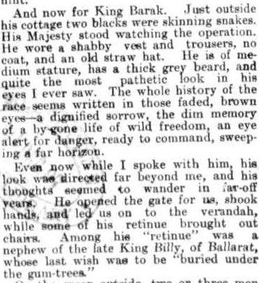

I've weighed in previously on the relentless emphasis on symbolism in the political prosecution of aboriginal issues in Australia. This isn't necessarily a criticism of aboriginal activists because, as I argued, they're working within the rules of memefication. I can add that, where there was virtually no aboriginal history for me at school, my kids got nothing but. Pretty much every year of their schooling they did some classes in aboriginal history. But the teachers were never engaged and they learned very little other than to dislike such fare for its vacuity, sentimentalism, it's lack of imagination or interest. And, of course, its repetitiveness.
In any event, for some reasons - perhaps explicated to some extent here - I think quite a lot about the tragic relationship between Europeans and aboriginal people, though I have no well thought out ideas about what should be done today. I've read various books like Inga Clendinnen's marvellous Dancing with Strangers and Peter Sutton's sad meditation The Politics of Suffering. I've read Watkin Tench and various others. And yet SBS's show First Australians, has been a complete eye-opener for me. Turns out the program is quite old - going back to the year of the apology - 2008.
In any event it's must viewing for all Troppo readers. Yes this means YOU!
I've now watched the first five episodes all of which are riveting. It is also the case that it's written from a largely aboriginal perspective - it doesn't get into the culture war argy-bargy of Keith Windshuttle or Peter Howson's argument that the stolen generations were really the 'rescued generations'. If one is seeking to apportion blame then there is probably a something to be said for injecting a somewhat more understanding explanation of some of the white conduct that shocks us the most today. Many of the crimes of empathy committed against aboriginal - or particularly 'half-caste' children were committed against 'disadvantaged' children all round the world and were part of a very different attitude to children. But it's a small thing in a program that is seeking to present the aboriginal experience.
I knew the bones of first contact - the first episode - from Clendinnen's book and other reading, but it was compelling nevertheless. I knew of the destruction of the Tasmanian Aborigines but only barely, having picked up this nineteenth century excuse for their destruction - that they were the most primitive people on earth - listless. You'd be a tad on the listless side if what happened to them happened to you - trust me.
The fourth and fifth episodes are about the logical consequence of economically developing the 'outback' without the slightest regard for the native inhabitants' prior occupation. As the cattle routes were opened up they destroyed the aboriginal water holes and their way of life and the indigenes hit back with violent resistance - which was brutally crushed. (I kept thinking it wouldn't have been that hard - probably would have been cheaper - to have engaged with the indigenous people to figure out how to protect what they wanted protected and go on with the cattle trade. I don't know enough to know if something like that might have been possible by fully acknowledging an aboriginal veto right to development - I suspect it might have been, but if that wasn't possible then it would have had to have been a heavier handed affair - but still not one that led to the agonies of the destruction of whole peoples that set in then and continue today.)
But the episode that moved me the most was the one with the least violence - just as I Daniel Blake, where the poor and the weak in society end up being done in by bureaucracy rather than anything as straightforward as physical intimidation or poverty. Episode three presents the story of Coranderrk - a story in which aborigines did everything humanly possible to succeed in the new circumstances - and did - only to be done in by the indifference of white society to their achievement and the relentless small-mindedness of bureaucrats charged with 'aboriginal protection'.
Turns out I spent quite a bit of time at Coranderrk as a kid without knowing it - whenever I visited Healesville Sanctuary. It was built by two succeeding ngurungaeta - principal elders - of their community of great vision and humanity. They accepted European ways right down to adopting European clothing, names - Simon Wonga and William Barak and the Christian religion. They had the help of a remarkable Scottish man of the cloth and together they built their land into a thriving and highly profitable agricultural community. Coranderrk's success became an embarrassment to those in charge of other aboriginal settlements and so it was gradually closed down in the most callous way.
The community was lied to, promises made to it to allow it to spend the surpluses from its agricultural production on social goods like a hospital completely disregarded and eventually set upon with genocidal intent (of the nicest kind mind you - no death camps for us). From Wikipedia:
As a result of the Aborigines Protection Act of 1886, around 60 residents were ejected from Coranderrk on the eve of the 1890s Depression. Their forced departure crippled Coranderrk as an enterprise, with only around 15 able-bodied men left to work the hitherto successful hop gardens.[8] Almost half the land was reclaimed by government in 1893, and by 1924 orders came for its closure as an Aboriginal Station, despite protests from Wurundjeri returned servicemen who had fought in World War I.[3] The reserve was formally closed in 1924, with most residents moved to Lake Tyers Mission in Gippsland in eastern Victoria. Five older people refused to move and continued living at Coranderrk until they died. The last known Aboriginal woman to live at Coranderrk was Elizabeth (Lizzie) Davis, who died in 1956, aged 104. She was denied permission to be buried at Coranderrk alongside her husband and siblings.
Sounds like a story worth telling. Yet it took till 2011 for a plaque to be erected at Healesville Sanctuary. Thanks guys. Anyway, that could have been taught to my kids. I was lamenting this to a friend recently on a walk to the MCG one day when he noticed we were working on the William Barak bridge - the walkway from Fed Square to the G. So some people are trying. Barak himself was a truly remarkable person. A diplomat he worked away to get what he could from the authorities. The Governor was quite well disposed but the Board for the aborigines Protection were relentless once they moved to diminish Coranderrk. The Governor asked William Barak if he could see a corroboree which Barak wanted him to see, but the Board wouldn't hear of it. The Governor eventually got a painting of a corroboree by Barak. All this time while he wore western clothes and participated in Christian religion, he'd been painting his old life. His paintings, now much sought after, are a remarkable affair in their hybridism between European and indigenous sensibilities. I'm no expert - perhaps this kind of thing wasn't that rare in the 19th Century - but I'm unaware of anything similar until the paintings that emerged a century later at Papunya. Here's an extract from the The Australasian towards the turn of the twentieth century (1897) and six years before Barak's life ended - as a noble leader of his people, as diplomat between them and the people who spoke of protection but who showed in their actions a criminal disregard for such a thing, and as a brave but broken man spending his final days recording the world he had known as it passed into oblivion.

It's a terrible, terrible story to make you weep at our small mindedness in the face of the grandeur and the potential we set our faces against at every turn. And I wandered around Coranderrk as a kid looking at the platypuses and other critters. We didn't really have to do any favours to the people of Coranderrk for them to have succeeded at least for a time and in so doing show us things we could never have known. And now we never will know. Instead we actively destroyed William Barak and his people. And we live with the consequences with very little clue about how we might make amends for such crimes. Having written the last sentence last night I've just discovered more Barakiana hiding in plain sight and towering over most of Melbourne! Another huge demonstration of my own ignorance - a veritable terra nullius in my own tiny mind. In 2015 there was a 32 story apartment block unveiled (they covered it up until finished - Christo eat your heart out!) with Barak's portrait etched into the articulation of the balconies. It sits subversively behind the Anglican Cathedral in the line of sight down Swanston St from the Shrine of Remembrance and of course I've seen it plenty of times without noticing or thinking. Ironically I got this from a Canadian website. Meanwhile one correspondent for the Conversation is not a happy camper because the building houses luxury appartments. Here's a lengthier piece on aboriginal monuments generally, but which focuses on the Barak building. [1. It's highly critical of a range of things some of which seem rather over the top to me, but one point that does hit home is the way in which the commemorative content of the design was almost comprehensively airbrushed from all the material marketing the building to people buying the units housed in it. The larger claim that the image has a kitsch inauthenticity to it is also worthy of consideration.]In any event, First Australians is a magnificent series of documentaries which I can't recommend highly enough.
Ironically I got this from a Canadian website. Meanwhile one correspondent for the Conversation is not a happy camper because the building houses luxury appartments. Here's a lengthier piece on aboriginal monuments generally, but which focuses on the Barak building. [1. It's highly critical of a range of things some of which seem rather over the top to me, but one point that does hit home is the way in which the commemorative content of the design was almost comprehensively airbrushed from all the material marketing the building to people buying the units housed in it. The larger claim that the image has a kitsch inauthenticity to it is also worthy of consideration.]In any event, First Australians is a magnificent series of documentaries which I can't recommend highly enough.
Nicholas
If your interested in 19C aboriginal Art :
Andrew Sayers 'Aboriginal Artists of the Nineteenth Century' is the book.
Re Coranderrk William Barak and the forced march across the mountains, this book is a good intro
Forests of ash : an environmental history / Tom Griffiths. Griffiths, Tom, 1957-
BTW Am told that somewhere in the 'basement of the Vatican' there is a set of aboriginal paintings on Masonite -dating to around around 1925. The paintings depict on one side the Rainbow Serpent creation story and on their other side depict the Stations of the Cross.
If you're interested in the indigenous history of the place where you live, can I recommend James Boyce's terrific 1835. Good summary and review here, and this particular reviewer's observations have a special relevance these days.
Thanks - I saw it in the shops when it was released and I read a chapter or two. It was interesting.
Nicholas
The Lamb enters the Dreaming by Robert Kenning.
From Greg Denning's review:
"Sick of the "History Wars"? Then take a mystery tour with Robert Kenny as he enters with tender respect the cruelly ruptured world of the Australians as represented by the Wotjobaluk people near Lake Boga in north-west Victoria.
Nathanael Pepper is Wotjobaluk. His conversion to Christianity and baptism in 1860 at the Moravian Mission on the banks of the Wimmera River was a sensation in its day. A sign of hope to believers. An occasion of ugly scepticism for the secularists of The Argus, who presumed Aboriginal converts would recur "with imbecile delight to the hereditary mia-mias and maggots".
Nathanael is Pepper's self-chosen name. Nathanael's famous question in the Gospel of John, "What good can come out of Nazareth?", is answered by Phillip's "Come and see". It is the understandings that are consequent on the acceptance of the invitation to "come and see" that intrigue Robert Kenny."
A moving story, Nick, but there is one thing I truly object to strongly in the above. You have fallen into a deadly trap when you use the word 'we', 'us, and 'our' above. Interestingly, you only fall into it about 2/3 into your story, clearly sucked in by the events and tv-series you describe. Let me gather some of the statements that are objectionable and explain my problem with them:
1. " our small mindedness in the face of the grandeur and the potential we set our faces against at every turn. "
2. We didn’t really have to do any favours to the people of Coranderrk for them to have succeeded at least for a time and in so doing show us things we could never have known. And now we never will know. Instead we actively destroyed William Barak and his people. And we live with the consequences with very little clue about how we might make amends for such crimes.
Why do I find this self-flagellation (which of course is quintessentially Christian) so objectionable? Because there is no 'we' in reality, nor is it helpful to invent a 'we' that continues to this day!
No-one from that age is still alive today. Nor can you reasonably claim that you descend from the 'perpetrators' of that age: the progeny from those that lived in Australia at time are probably more represented in the self-identified 'First Australian' community than by you, me, or the average recently migrated white Australian.
You see Nick, nearly all, if not all of your ancestors came later to Australia than the period you describe. None of mine lived there at the time, and the communities that did live there at the time interbred.
So the 'we' of that period is no longer here, and the communities in Australia 150 years ago are not represented by 'whites' and 'non-whites' around today in Australia! What exists now are entirely different groups, both culturally and in terms of family lines.
On what basis do you then identify with the perpetrators and are the 'victims' the 'him' and 'them'? On what basis do you drag others into the 'we' that are the perpetrators, stigmatising 'us'? And on what basis do you stigmatise others as 'them'?
You have hence fallen into the trap that ensures continued misery. That ensures there is an 'us' and a 'them', that talks of 'Europeans' and 'Aborigines', of 'white' and 'black'.
Do you not see how destructive it is to think in such terms? How one ensures that the majority of the rich and well-meaning Australians will continue to have no real interest in engaging with disadvantaged communities in Australia, simply because one heaps shame and guilt on them due to the color of their skin? Some wear that mantel of false guilt with pride, but many react negatively towards that kind of stigmatisation and simply will want nothing to do with the whole thing.
There is no good that can come from pushing that guilt button, only continued misery.
Our hope lies in our joint humanity, a joint story of nationhood and citizenship. One can speak of historical injustices, current misery, and the basic duty that the successful have towards the less successful in terms of helping hands. One can also talk of rights over land because of family ancestry. But to stigmatise all Australians, divide them on the basis of skin color and current position, and then demand that 'we' 'make amends', is to ensure more lost generations. You are then just feeding the swamp of failed policy, and all those who benefit of that swamp.
You are one of the most well-meaning persons I know, so I despair at seeing you fall into this trap. It is why in your previous post I said I see no way out of the 'swamp' of 'indigenous policy'. If even the best of us cannot help being sucked into the destructive language of 'us' and 'them', into the trap of racial self-identification, with the 'them' condemned to the position of 'victims' and the 'us' condemned to the position of 'guilty perpetrators', what hope is there?
Paul, peace be with you
Paul BTW Reification has been mentioned...
Thanks Paul,
It's certainly a serious issue and what you say has an unimpeachable logic. My father got here in 1940 and was born of Austrian and Hungarian stock, so in that (thin) quantitative sense he's off the hook. Mum not so much - she was born in Leeds England in 1922, but to 4th generation Australians one of the two of which (I think her father) was a cousin of Banjo Patterson. But then I'm not responsible for my parents. So I'm thinking my use of the pronoun 'we' must signify something else.
I think my father could have said 'we' in the sense I mean it in that post. I certainly could in his position. I recall reading of the Irish Potato famine - where the British treated the Irish with the kind of contempt that 'we' - Australians - treated the aborigines. And it made me burn with the same kind of anger. I also identified with the British - the powerful ones and was ashamed of what they did - though it's true that I wouldn't have used the word 'we' to refer to the Brits.
So I don't look at it in quite as cut and dried way as you do but I think what I'm saying makes sense. When I think of my grandmother who was murdered with another 5,999,999 Jews - which I do quite often, though I never met her, I honour her memory, her suffering the barbarity of the way people behaved - and its continuity with lots of behaviour every day where people are treated with comprehensive lack of respect - even if not genocidally - because they're not in the right group. I can imagine some German feeling bad about it - but there's not much to be done. She's dead - I'm doing OK thanks to some lucky circumstances and whatever good things I've managed for myself. And they weren't responsible. That's pretty much it.
But it would certainly make sense for them to say something about what 'we Germans' did to my grandmother. So we have collective identities going on here. If my father becomes a naturalised Australian citizen as he did - or just someone who identifies as an Australian as occurs all the time - they might start using the pronoun 'we' as I might, about what Australians did at Gallipoli - or to the aborigines. Or as I might about how we (Collingwood) cocked up the 1970 VFL Grand Final.
So that's something we need to think about. (By 'we' that's you and me Paul - both living people who got ourselves into this conversation of our own free will so I think we're in the clear;).
When I wrote "And we live with the consequences with very little clue about how we might make amends for such crimes" I meant it largely as a statement of our ignorance about how we might make blighted lives better today. But of course it's also some acknowledgement that there is historical continuity. Aboriginal suffering today is the direct outcome of the relentless disrespect shown by European society towards aboriginal people - right down to Europeans' disrespect of their own culture and religion at the heart of which is a radical assertion of the need to respect outsiders' humanity.
What does that imply for 'us' - those of us who occupy the commanding heights of the society? In terms of jurisprudence or public policy you can argue that it's largely irrelevant. We owe help to those who need it and can benefit from it whatever the provenance of their suffering. That might be the right, practical answer. But we're human beings with emotions, and so I respond to the story of our - yes our - destruction of aboriginal life. I feel very upset about it. Then again I feel upset at my grandmothers' murder.
I also meant to intimate that making amends as if it is an atonement for guilt makes no sense to me. It's why the whole idea of 'reconciliation' gives me the creeps. A white ad campaign. All of a sudden we announce that 'reconciliation' is the new brand and off we go again.
I don't know if when you read this you'll just think I'm confused (I think you're too enamoured of a kind of formal logic), but the outlines of your critique I generally agree with - if this is supposed to be about guilt and atonement. (Neither word appeared in my post.) Moreover I think your point about who are 'we' and who are 'they' is a matter of great practical import and why I'm wary of the idea of a treaty - though it sounds like it could be a good idea in the kind of context that Ken is talking about it in - in the NT where about a third of the population are living relatively separate, lives in which there is continuity in their aboriginality. For me anyway, the point of the treaty would largely be to give them (mostly aboriginal people in aboriginal communities) some place to stand on in their negotiations with mainstream society rather than always seeking what they seek by European society's grace and favour.
One other point. My thinking here is very much of a piece with my thinking about contemporary life in which various cultures are simply deprecated as essentially not worthy of respect. It happens in schools of course where uncoolness is a kind of death. But it's a constant in history that if you end up on the wrong side of some divide your capacity to command respect from those in positions of power simply evaporates to pretty much nothing. I can't tell you how much I cavill at that - though I expect I stumble into doing it myself from time to time. Right now that's tearing the US apart as each side parades its contempt for the other - and of course in such circumstances it's not hard to see substantial things about either side that are contemptible. I think we should ponder our utter contempt and disregard for the original inhabitants of this continent. We should look it in the face and wonder in what ways we're doing it all over again. Perhaps that's one way we can make amends.
Yes, saw it in a bookshop. Looked very interesting.
If I may say I think Ron Brunton's work at the IPA of all places was possibly the most impressive I have read on the 'stolen' generations.
such a pity the IPA does not have more Bruntons instead of the mediocrity that has worked there of late/
Really? Really!!?!!
You can seriously look at "The Intervention" when we sent the army in to enforce new laws we passed specifically targeting Aboriginal Australians (and had to suspend our own anti-racist legislation to do that), and say "no-one involved is alive now"? We did that in 2007. It's only history in the John Howard sense of "it started in the past".
I'm with Nick: we did the wrong thing, we keep on doing wrong things, and we have no excuse for not knowing that we are doing the wrong thing. That's on us.
Moz, without addressing Paul's wider comments, can I say that I read the line you quote as referring to the time of William Barak. If I'm wrong, I'm happy to be corrected.
I don't think you need correcting - it seems quite clear.
I'm surprised at that comment Homer,
I'm no expert. I noted the controversy about the Bringing them Home Report at the time and though I didn't read the texts at all closely it seemed that all those roundly attacking the report came from a particular place. They were defending Australia's honour and were stung particularly by the 'genocide' claim.
Without having wound myself up in indignation about our conduct in destroying aboriginal life at the time, it all seemed incredibly ungenerous to me.
In fact as I was writing the post I was thinking that the debate that ensued then - and was prosecuted most particularly by Keith Windschuttle - was particularly unedifying. I've written about how policy debates are impoverished by being conducted as culture war and of course the whole paradigm of culture war comes from this debate - in Australia it does anyway.
And it exhibits the downsides of debate as culture war it seems to me. The problem is that you end up with stupid questions like "is Australia good or bad", was doing what we did "genocide". Pretty obviously the story of Australia is good and bad. One could even argue reasonably I think that our relationship with aboriginal people was one of the best in the world - but so what? Any decent understanding of what we did leaves one just aghast at how callous we were. At the same time we have much to be proud of in our history. And equally - so what?
Likewise I used the word "genocide" above because it seems to me that's what it was. But it wasn't morally equivalent to deliberately rounding up a whole population and seeking to kill them all. If I was writing an official document I expect I wouldn’t have used the word 'genocide' because it just gets people heading off in all sorts of stupid legalistic directions that don't prove a thing.
Brunton was perhaps one of the less objectionable objectors to the Bringing them Home report, but he dished it out and preoccupied himself with the kinds of questions I've argued above don't get us anywhere.
Nicholas
The discussion is starting to resemble a rather dour chapel: all sin and no forgiveness, no Peace be with you.
BTW its also reminding me of this 'so true' New Yorker cartoon
nick a few things
The Bringing them home report was a disgrace. It accepted anyone's account of what happened without evidence.
My memory has it the Royal Commission into Aboriginals dying in gaol looked at 30 odd cases and found none were involved with them being stolen.
Ron i think was very impressive in showing a lot of cases involved 'half castes' being taken away after being threatened by 'full castes' in Aboriginal communities.
Ron was very much a detail man far far different to Windshuttle who was a disgrace.
The link is broken.
It's a serious subject and peace is the least of my concerns right now.
Your saying peace be with you somehow reminds me of the Get Smart episode in which Max is hobnobbing with some arabs in a tent and he says he'd like to step outside briefly (I think to relieve himself). His host says to him "May Allah go with you". Max says "No thanks Abdul, I'd rather go alone".
Don't know how that happened to the link.
Ty this
http://deathternity.blogspot.com.au/2013/04/paul-noth-new-yorker-funeralcasket.html
And Yes , continuity means it is a serious subject.
"The aboriginals and half-castes of Central Australia and North Australia" report for the commonwealth by J.W. Bleakley 1929.
Am told that the recommendations of this report formed the basis for the assimilation policies of the 1930s onward :
" collect all illegitimate half-casts... and place in Aboriginal Industrial mission Homes for education and Vocation"
"transfer those with preponderance of white blood to European institutions at an early age, for absorption into the white population after vocational training"
Near its end the report also recommends against a number of proposals for example the:
"establishment of a native state with self government;" and "Education in Citizenship"
ok, I'll quote some of the relevant comments:
Nick appears to be speaking as someone who thinks of himself as Australian, a country where we still have the habit of committing grievous wrongs against Aboriginal Australians.
That reads like a very contemporary view of the situation to me. Maybe it's ancient history to "continue to" do things. Howard certainly thought so.
Also, persecuting Aboriginal Australians is not done because of their skin colour. It's race.
I don't see anyone disagreeing with the "joint humanity" part until we start talking about human rights, at which point the wheels fall off. Humanity without rights is an Australian tradition, sure, and an important part of our culture, but it's also not very nice.
Paul seems to me to be arguing for an ahistorical approach, that much is clear. It's possibly even more so than the Howard "white blindfold" version, since Howard at least accepted stuff like the report into deaths in custody while refusing to apologise - I'm not sure that Paul would even go that far.
I don't see this as at all related to guilt and atonement. It's not personal, in fact it's impersonal in the worst possible way - it denies the humanity of the other and relies on doing that to perpetuate the harms done. To the extent that it's about "us and them", I am all about deciding that "them" are people after all, and should have the same rights and obligations as everyone else.
If you want a conservative justification for change I think we could reasonably use property rights. They're a core component of the conservative worldview. I'd put that view as: good people work hard to build lasting wealth and the government should support them in building and holding on to that wealth. If someone accepts that, I think they have an obligation to say "it's their land, they own it, if we want it we have to buy it off them. The government should recognise that ownership and give them the same help to hold onto what is theirs as they give everyone else" (eg, the agrarian socialist approach to remote area residents). I'd also love to see a bit more "native title is a nonsense, the legal distinction between races should not exist and must be fixed" from the "we are all one people" types, because having a special, inferior class of land ownership that's specific to one race is offensive.
From a liberal rather than conservative point of view, it's about recognising disadvantage and acting to correct it. Much as we shouldn't look at someone in a wheelchair and say "you were drunk when you had that accident so it's your problem", we shouldn't look at someone who is suffering diseases of poverty and say "you're an aborigine, you deserve it".
I think we can do that from a completely ahistorical point if we have to, but I think to do so would be immoral and stupid, not least because it relies absolutely on maintaining the separation that Paul objects to, the one that allows "us" to do things to "them". Specifically, that "we" will decide how unhappy "they" are allowed to be about historical wrongs.
99 cases
That reads to me like people were not murdered but manslaughter seems likely.
Sorry, just one clarification:
Is not meant to be a justification for arbitrary compulsory acquisition or theft. Pragmatically any settlement will require a great amount of compulsory acquisition, or at least recognition of historical acquisitions, but I think we should start with the position that land was owned before the nation-state Australia was created. Ideally we'd buy land from the traditional owners the same way we buy anything off anyone - make an offer, if it's not accepted offer more until we reach our limit then walk away. That's capitalism.
The story of Corranderk is told in a play based on original records, by the Aboriginal theatre company Ilbijerri. It is just starting a tour of Victoria through April & May. I had never heard of Corranderk until I saw the play, I found it a really engaging presentation of the history and human impacts. (The website is http://ilbijerri.com.au/event/coranderrk if the link doesn't work)
Thanks very much for that Keryn,
I'm booked to go. Maybe we should have a troppo outing to the theatre. Say hello if you come along.
Keryn Thanks it sounds like a good ' excuse' to drive down to Victoria . We made the trip to Corranderck cemetery about 2 and a bit years ago, its a haunting and beautiful place . Its at the end of a narrow, gently wooded, low ridge protecting into the river flats. There are a few gravestones ,but most of the names are on a brass plague attached to a concrete memorial. The people buried there came from all over Victoria and being driven out of this place must have , hurt.
Nicholas
That 1929 report gives the aboriginal population , for all of north as around 5000.
Assuming that their counting missed quite a lot it might have really been 10 to 15 thousands. And that suggests that between 1800 and 1900 there was a lot of deaths, probably mostly down to things like small pox , and starvation ( in drought years) as most of the best, refuge , country was ever more fenced off.
Hi Nick,
Several points. You seem to agree with most of what I say, so there's not much to disagree on then, just more elaboration.
Take the issue of historical continuity first. Historical continuity of peoples is always an abstraction, ie something we humans make up but that is pretty much impossible to pin down precisely. So there is an element of choice there and, ultimately, the question has to be 'to what use' do we go along with historical groupings.
For example, your own family history. Your father was Austrian, but I guess you wouldn't want to take responsibility for Hitler, who was also Austrian! He did come from the upper groups though, so how about the repression of the peasants in the preceding centuries, or of WWI where the Austro-Hungarian empire was on the other side to us Australians?
And if we're talking about events of the mid 19th century, then of course we are talking some 6 generations ago. That is 64 of your actual ancestors alive at that time. There is a good chance you had someone French or German in that bunch (the most populous groups of the time), so that means you can make a case that you 'belong' to pretty much any grouping around in Europe you like.
So just in your own family tree, if you think of almost anything bad that happened in Europe more than 100 years ago, there is bound to be people on both sides of the atrocity that you are related to by bloodlines. That means your ancestors will count as both the victim and perpetrators of almost anything major, particularly if you go back further in time.
The first point of this is that there is an element of choice as to what you 'take on' as historical luggage pertaining to your self-image. That also goes for everyone else.
The second point of this is that when we look at who is alive now, it is pretty much impossible to cleanly make a distinction between the 'progeny of the victims' and the 'progeny of the perpetretators'. To make such a distinction is not merely mythical, but also a form of aggression in its own right: people are put into groups together with notions of guilt and atonement on very dubious grounds that are usually not openly debated (partly because if they were debated, the argument for making these group distinctions would quickly crumble to dust). So people are roped into negative group stories who do not want to be roped in.
But we humans cannot help buy into stories of the groups we belong to, and then buy into stories of how 'we' 500 years ago did this or that. However idiotic such identification is, we do it. And we constantly reinvent and enrich those stories as well, switching stories when we migrate to fit the new groups we suddenly belong to.
So when making stories of historical groups and continuities in Australia, the issue is 'to what use'. And the use of the guilt story in this debate is totally destructive. It is not helping. It is not merely factually tenuous (all communities will have bloodlines relating to both sides of any major historical event), but it sets you up for endless recriminations, soul searching, blame, and culture wars that never get resolved.
By the way, I did interpret your use of the word 'amends' as assuming a notion of guilt and responsibility on the basis of what happened in the events you quote. Very hard to read your 'amends' sentence in any other way than a guilt-way.
Then the notion that 'we Australians' as a whole people are to blame for something and that there is a 'them' that is not to blame and that is purely a victim and has a right to redress on the basis of being a victim. That too is a toxic notion, I find. I just cannot see how a nation can adopt such a story without setting itself up for continuous strife because the underlying logic is that the nation is then not one people, but more than one people.
Besides the factual point about bloodlines again, you are essentially putting resources on the table on the basis of ethnic and racial victimhood stories, so you create industries by doing so who have an incentive to keep on pushing the same guilt buttons. The more the audience buys into those 'us/them' story, the bigger the pay-off for those advocating them, and the more they will keep going with them. I am not thinking here of individual indigenous person benefiting, but more of the ministries and others who are into 'sorry day' and all the rest of it.
Which brings us to the question of what the story is that WE Australian should have, and I can think of no better story than that of our shared citizenship and humanity, of the duties of the fortunate towards the unfortunate. And of course of a fair law for all, which includes the right of progeny to argue for any property that was taken from their ancestors (even if those ancestors did not think in terms of property: rules of redress have to follow the same principles as inheritance rules).
Or can anything think of better stories that allow 'us' to go forward on this matter?
Btw, of course i think you're a bit muddled in this. But that is part of the point of my reply: it is damned hard not to be muddled on this that people resort to their standard heuristics and stories on these things, which unfortunately in this case begets totally unproductive outcomes.
Btw II, I once estimated that in the average direct male line (father, grandfather, greatgrandfather, etc.), between now and the start of humanity some 100,000 years ago, we on average must have around 25 murderers and 50 rapists. Those with a longer ancestry of hunter-gatherers might well have more. Plenty of blame to go round then, if you choose to play the historical blame game.
A classic example of this was the episode of : Who do you think you are, where Ainsley Harriott discovered that his "great-great-grandfather, James Gordon Harriott, wasn't a black slave as he had thought, but the descendant of a long line of white slave owners."
Thanks for this Paul, but it's just too extreme for me.
No one is responsible for their ancestors' crimes. We do however buy into collective identities - essentially on the grounds that, like individual identities they cohere through time.
You're no doubt familiar with Hume's 'deconstruction' of self or identity and before he became a literary critic, William Hazlitt wrote a treatise on identity arguing that our identities don't cohere through time and that therefore there was a real issue with foresight. Given how distant our old selves are from our younger selves, what explains what desire there is for the younger one to sacrifice to help the older one? It's a good question. But we persevere with this fiction that the 'me' of today, is the same 'me' that went to school, as tenuous a description of the psychological reality as it is.
So your appeals to my 'guilt' for my ancestors don't speak to me at all. Obviously no-one is responsible for that. But a critical part of our identity is our group identity.
Why don't you ban the use of the pronoun "we". Then it wouldn't be possible to say that 'the Australians' treated aboriginal people badly, only individuals - in government, on the frontier etc.
"No one is responsible for their ancestors’ crimes."
agreed. So if wasn't 'us', why should 'we' make amends?
Group identity is a critical part, but it is fluid and negotiable.
Ideally, I don't think we should be busy at all with the many historical problems groups who now live in Australia experienced in the past, or do you really want the Chinese in Brisbane to start complaining about the destruction of Nanjing by 'them Japanese' in Sydney? Or the Serbs and Croats having another go at each other in Melbourne for what happened in the 90s? Or the Greeks in Melbourne picking a fight with the Germans in Perth for what happened in 2015?
In stead of playing any blame and sub-group game, we should talk about disadvantage and how to overcome it. Overcoming disadvantage by creating group-distinctions and a guilt industry is not useful.
You say that "Overcoming disadvantage by creating group-distinctions and a guilt industry is not useful" which I agree with. But a program to tackle (let's not get carried away with 'overcoming' just yet - let's walk before we run) the disadvantage of people in rural communities in the NT will be a direct confrontation with their aboriginal identity and history.
There may be other things to it, but that will be of considerable importance. And that then perpetuates an aboriginal other. So I don't think you're owning up to the complications and tensions in your position.
"I don’t think you’re owning up to the complications and tensions in your position."
I guess it is only fair you get a go at me too :-)
But of course I disagree. I think a principled 'no victim, no guilt' course is the way to go in this. Particularly for the state. And I also think a 'constructionist' view of identity is the way to go, both for the state and people who view themselves as community leaders. The constructionist question should be 'what kind of identity is useful for us now, in a transition, and for a country. 'What kind of history' is useful to have?
I think that such an approach is the way to go, but the whole thing gets dragged into the swamp as soon as anyone tries to move on this issue. As a first mover, I would advocate the state explicitly shies away from any blame/victim narrative though. I hope some far-sighted civil servant somewhere is commissioning new history books and narrative tools with the same thinking in mind.
You may say that what I am advocating is not politically tenable at the moment. Probably not, you would know better. Academics have the luxury of not having to tow the popular line on every issue. We get to remind others of the impossibility and damage of their position, declare a consistent but impossible line as the way to go, and then we get to sit on the fence feeling all smug in the belief we have show the way and merely need to wait for the rest to catch up.
Nick,
Would appreciate if you could not use the Royal “We” when you describe earlier times in Australia. I am a sixth generation Australian and will not be held to account for the sins of my forebears. I was not there and did not perpetrate any sins. I am not a member of the historical guilt industry.
Indeed I come from a long line of Scots via the Shetland Islands, which was invaded by Norsemen in the 9th century, belted up the locals, and made themselves at home.
I am not about to join a class action for the terrible “invasion” of the Shetlands. Indeed the current locals stage the Up Helly Aa festival, every last Tuesday in January, in recognition of the improvements made by the Vikings to early life.
Ezekiel 18:19-20 ESV
“Yet you say, ‘Why should not the son suffer for the iniquity of the father?’ When the son has done what is just and right, and has been careful to observe all my statutes, he shall surely live. The soul who sins shall die. The son shall not suffer for the iniquity of the father, nor the father suffer for the iniquity of the son. The righteousness of the righteous shall be upon himself, and the wickedness of the wicked shall be upon himself’”.
And hey ! I am an atheist, but the above seems to sum it up pretty well.
You have not been appointed the guardian of the Royal “We”, and constant reference to the “we did it” referring to early times in Australia is wide of the mark.
No doubt there was (some) less than favourable conduct on the part of early governments and missionaries in Australia, but I wasn’t part of it. And those (by evidence) affected by the poor conduct of early Administrations should be recognised and the descendants paid some form of compensation (which has occurred).
I do hope you are not going to hang (in perpetuity) the Sword of Damacles over the head of the German baby born yesterday. I am aware of your personal connection to the Holocaust and for that I honour your Grandmother, but lumping the Holocaust guilt on yesterdays German baby does not seem fair to me.
What I am concerned about is that my family some 500 years from now will still be held to account for the sins of the past.
Thanks James,
I don't think you mean the royal 'we'. I'm not meaning to suggest that I'm the king. I think you mean 'we'.
Spoken languages are not computer code. They carry a lot of ambiguity, and vagueness of meaning. I'm perfectly happy to use the word 'we' when referring to things in the past. Like the way 'we' lost the Grand Final in 1970, the pride I have in the way 'we' Australians conducted ourselves in Changi prison and so on. These don't imply personal liabilities for any misdeeds of Collingwood players in 1970 or of any Australian prisoners in Changi.
As Paul Keating said 'we' brought the diseases, we took the children etc.
A German might reasonably say - mightn't they - that 'we' bombed London in 1940 - without flying the bombers, ordering their flight or even being alive? Just as he might say "we Germans have made major contributions to European culture" even if most of those contributions were made before any German living today was born.
It's the way we use language and form and express sympathies. If we're debating personal guilt and/or legal liabilities we (there's that word again - looks like I'm implicating everyone reading Troppo now) need to take account of other considerations.